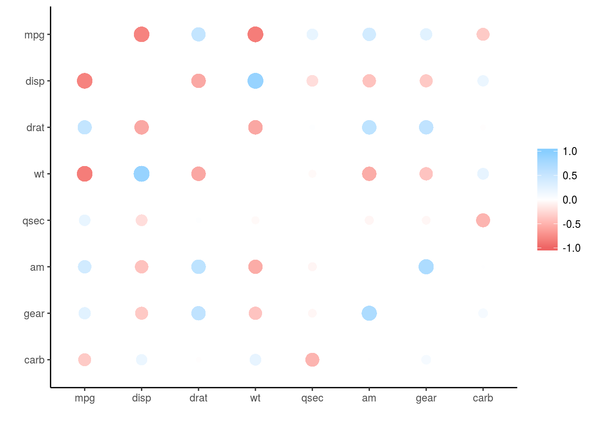
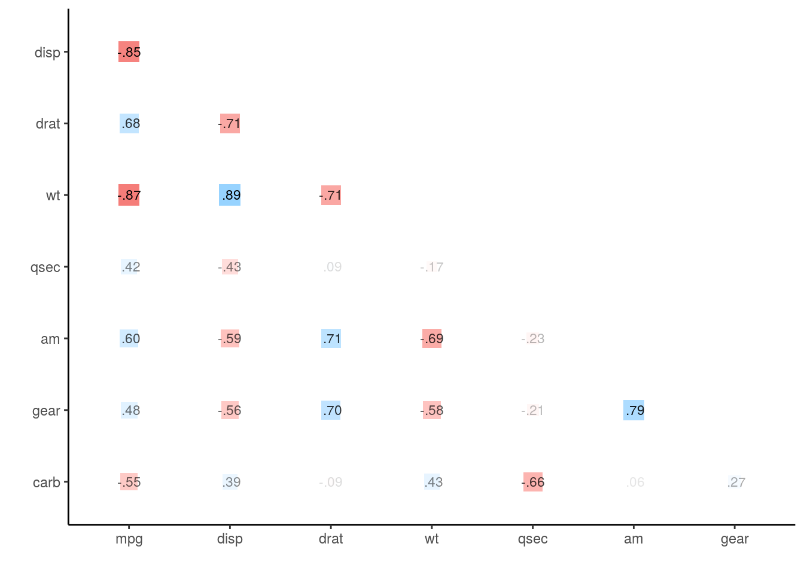
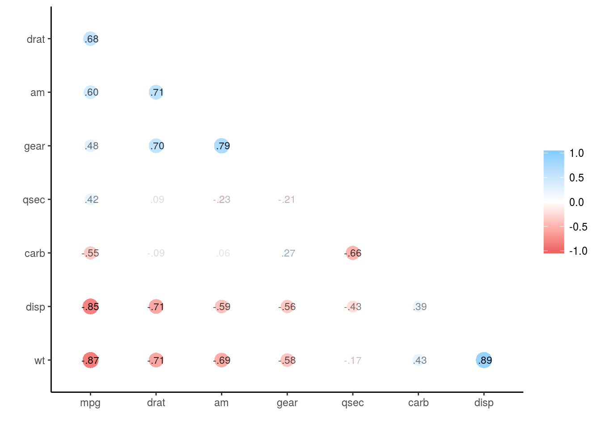
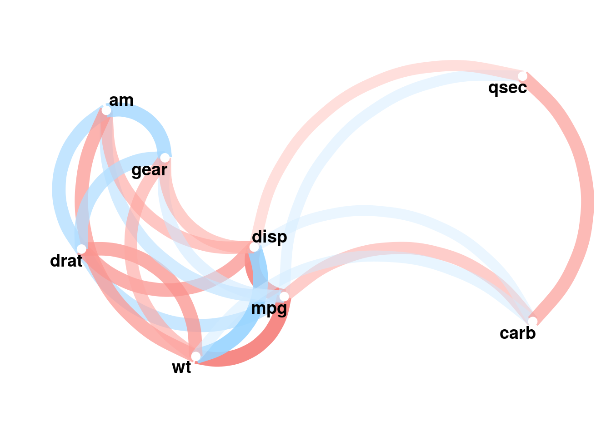
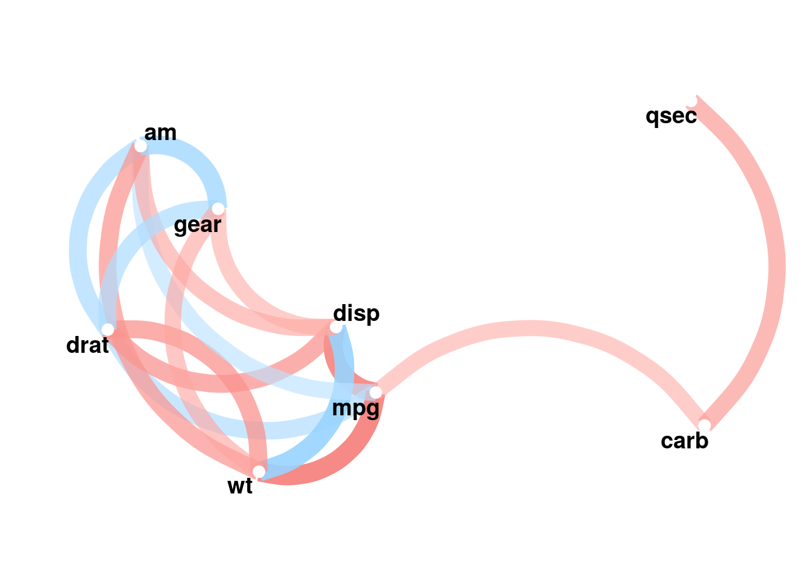

概要は以下のとおりです:
A tool for exploring correlations. It makes it possible to easily perform routine tasks when exploring correlation matrices such as ignoring the diagonal, focusing on the correlations of certain variables against others, or rearranging and visualising the matrix in terms of the strength of the correlations.
要するに、相関行列を簡単に、そしてちょっと便利に出しますよというものです。
cran版は通常通りでインストール可能:
install.packages("corrr")開発版はgithubよりインストール。ただdevtoolsパッケージがv1.6以上を要求するようです:
if (packageVersion("devtools") < 1.6) {
install.packages("devtools")
}
devtools::install_github("drsimonj/corrr")もしくは{githubinstall}でさくっといれます:
devtools::install_github("hoxo-m/githubinstall")
library("githubinstall")
githubinstall("corrr")あと、依存関係で色々なパッケージがDLされます。詳しくはcranの該当パッケージ情報をご覧ください。
読み込んで使用していきます:
library("corrr")以下、githubに書いてある例をベースにサンプルデータセットを作成します:
library(MASS)##
## Attaching package: 'MASS'## The following object is masked from 'package:dplyr':
##
## selectset.seed(57)
# 相関がお互いに.7の3変数を作成
mu <- rep(0, 3)
Sigma <- matrix(.7, nrow = 3, ncol = 3) + diag(3)*.3
seven <- mvrnorm(n = 1000, mu = mu, Sigma = Sigma)
# 相関がお互いに.4の3変数を作成
mu <- rep(0, 3)
Sigma <- matrix(.4, nrow = 3, ncol = 3) + diag(3)*.6
four <- mvrnorm(n = 1000, mu = mu, Sigma = Sigma)
# 二つを結合してv1:v6までの変数を持つデータの作成
d <- cbind(seven, four)
colnames(d) <- paste0("v", 1:ncol(d))
# 1列目と5列目に欠損値をまぶす
d[sample(1:nrow(d), 100, replace = TRUE), 1] <- NA
d[sample(1:nrow(d), 200, replace = TRUE), 5] <- NA
# dfの情報
summary(d)## v1 v2 v3
## Min. :-3.32585 Min. :-3.168534 Min. :-3.67105
## 1st Qu.:-0.64058 1st Qu.:-0.638804 1st Qu.:-0.69661
## Median : 0.03548 Median :-0.008613 Median :-0.01928
## Mean : 0.03225 Mean : 0.045645 Mean :-0.01248
## 3rd Qu.: 0.75966 3rd Qu.: 0.760739 3rd Qu.: 0.65623
## Max. : 2.48431 Max. : 3.311481 Max. : 2.85512
## NA's :97
## v4 v5 v6
## Min. :-3.43809 Min. :-3.00714 Min. :-3.18721
## 1st Qu.:-0.62709 1st Qu.:-0.65496 1st Qu.:-0.62557
## Median : 0.07109 Median : 0.01357 Median : 0.04961
## Mean : 0.06450 Mean : 0.04083 Mean : 0.01731
## 3rd Qu.: 0.74101 3rd Qu.: 0.67596 3rd Qu.: 0.66742
## Max. : 2.93350 Max. : 3.45739 Max. : 3.08986
## NA's :184以下、このパッケージの主要な関数についてテストします。
correlate()数値ベクトル、行列、もしくはデータフレームから相関行列を算出します。出力はtbl(tiblle::data_frame)などが付与されたもので、ほぼdata.frameと同様に扱えます。
x <- correlate(d)##
## Correlation method: 'pearson'
## Missing treated using: 'pairwise.complete.obs'class(x)## [1] "cor_df" "tbl_df" "tbl" "data.frame"x## # A tibble: 6 × 7
## rowname v1 v2 v3 v4 v5
## <chr> <dbl> <dbl> <dbl> <dbl> <dbl>
## 1 v1 NA 0.70533312 0.696751634 -0.019391631 -0.040154825
## 2 v2 0.70533312 NA 0.716027507 -0.019635452 -0.030941464
## 3 v3 0.69675163 0.71602751 NA -0.003882606 -0.006444362
## 4 v4 -0.01939163 -0.01963545 -0.003882606 NA 0.380190219
## 5 v5 -0.04015482 -0.03094146 -0.006444362 0.380190219 NA
## 6 v6 -0.01903664 -0.03123876 -0.003892283 0.394416376 0.413242180
## # ... with 1 more variables: v6 <dbl>この関数はstats::cor()と同様、以下のように使います:
correlate(x, y = NULL, use = "pairwise.complete.obs", method = "pearson")use=は欠損値を持つ変数に対してどういう処理をするかを文字列でひとつ指定します。選択肢は"everything", "all.obs", "complete.obs", "na.or.complete", or "pairwise.complete.obs"で、デフォルトではペアワイズです。method=は相関係数の算出法について文字列で指定します。選択肢は"pearson" (default), "kendall", or "spearman"で、デフォルトはピアソンです。このcorrelate()で生成された相関行列にはcor_dfクラスが付与されていて、このパッケージ内の他の関数を使って色々便利なことができるようになります。
focus()correlate()で算出した相関行列(cor_dfクラス)のうち、着目したい変数を絞り込むことができます:
focus(x, v1:v4)## # A tibble: 2 × 5
## rowname v1 v2 v3 v4
## <chr> <dbl> <dbl> <dbl> <dbl>
## 1 v5 -0.04015482 -0.03094146 -0.006444362 0.3801902
## 2 v6 -0.01903664 -0.03123876 -0.003892283 0.3944164この関数は以下のように使います:
focus(x, ..., mirror = FALSE)xはcorrelate()で作成された相関行列(cor_dfクラス)を指定します。...の部分で、焦点を当てる変数(列)を選択します。ここで選択した変数が列として残り、それ以外の変数は行方向に並びます。mirror=は選択した列を行方向にミラーするかどうかを論理値で指定します。デフォルトではFALSEで、上記のようになります。この関数のポイントは2点あり、mirror=の指定と変数の選択方法です。以下解説します。
mirror=の指定上の例で、mirror=TRUEを指定すると、以下のようになります:
focus(x, v1:v4, mirror = TRUE)## # A tibble: 4 × 5
## rowname v1 v2 v3 v4
## <chr> <dbl> <dbl> <dbl> <dbl>
## 1 v1 NA 0.70533312 0.696751634 -0.019391631
## 2 v2 0.70533312 NA 0.716027507 -0.019635452
## 3 v3 0.69675163 0.71602751 NA -0.003882606
## 4 v4 -0.01939163 -0.01963545 -0.003882606 NA比較してもらえれば一目瞭然かと思います。必要に応じて使い分けると便利でしょう。
このパッケージでは{dplyr}パッケージをインポートしてきます。なので、dplyr::select()と同じように変数選択が可能です。普段からdplyr::select()に慣れているならば、その意味がよくわかることでしょう。
focus(x, ends_with("5"))## # A tibble: 5 × 2
## rowname v5
## <chr> <dbl>
## 1 v1 -0.040154825
## 2 v2 -0.030941464
## 3 v3 -0.006444362
## 4 v4 0.380190219
## 5 v6 0.413242180rearrange()correlate()で作成した相関行列(cor_dfクラス)について、高い相関を持つ変数が近くになるようグループにする関数です。ここではわかりやすくするため、mtcarsのデータセットで説明します:
d2 <- mtcars %>%
correlate() %>%
focus(-cyl, -vs, -hp, mirror = TRUE)##
## Correlation method: 'pearson'
## Missing treated using: 'pairwise.complete.obs'd2## # A tibble: 8 × 9
## rowname mpg disp drat wt qsec
## <chr> <dbl> <dbl> <dbl> <dbl> <dbl>
## 1 mpg NA -0.8475514 0.68117191 -0.8676594 0.41868403
## 2 disp -0.8475514 NA -0.71021393 0.8879799 -0.43369788
## 3 drat 0.6811719 -0.7102139 NA -0.7124406 0.09120476
## 4 wt -0.8676594 0.8879799 -0.71244065 NA -0.17471588
## 5 qsec 0.4186840 -0.4336979 0.09120476 -0.1747159 NA
## 6 am 0.5998324 -0.5912270 0.71271113 -0.6924953 -0.22986086
## 7 gear 0.4802848 -0.5555692 0.69961013 -0.5832870 -0.21268223
## 8 carb -0.5509251 0.3949769 -0.09078980 0.4276059 -0.65624923
## # ... with 3 more variables: am <dbl>, gear <dbl>, carb <dbl>この場合、出力される相関行列はデータセット上の並びとなります。これにrearrange()を適用するとこうなります:
rearrange(d2)## # A tibble: 8 × 9
## rowname drat am wt gear disp
## <chr> <dbl> <dbl> <dbl> <dbl> <dbl>
## 1 drat NA 0.71271113 -0.7124406 0.6996101 -0.7102139
## 2 am 0.71271113 NA -0.6924953 0.7940588 -0.5912270
## 3 wt -0.71244065 -0.69249526 NA -0.5832870 0.8879799
## 4 gear 0.69961013 0.79405876 -0.5832870 NA -0.5555692
## 5 disp -0.71021393 -0.59122704 0.8879799 -0.5555692 NA
## 6 mpg 0.68117191 0.59983243 -0.8676594 0.4802848 -0.8475514
## 7 carb -0.09078980 0.05753435 0.4276059 0.2740728 0.3949769
## 8 qsec 0.09120476 -0.22986086 -0.1747159 -0.2126822 -0.4336979
## # ... with 3 more variables: mpg <dbl>, carb <dbl>, qsec <dbl>この関数は以下のように使います:
rearrange(x, method = "PC", absolute = TRUE)xはcorrelate()で作成された相関行列(cor_dfクラス)を指定します。method=は配置(クラスタリング)する方法を文字列で指定します。デフォルトは“PC”で主成分分析です。absolute=クラスタリングするときに相関係数の絶対値を利用するかどうかを論理値で指定します。デフォルトはTRUEで絶対値を使ってクラスタリングします。つまり相関行列からクラスタリングしてまとめてくれて並べ直してくれる、という関数となります。このクラスタリングはseriation::seriate()に依存していますので、この関数のヘルプや開発者がこの点について説明している記事を参照してください。
shave()correlate()で作成した相関行列(cor_dfクラス)について、三角化します:
shave(x)## # A tibble: 6 × 7
## rowname v1 v2 v3 v4 v5 v6
## <chr> <dbl> <dbl> <dbl> <dbl> <dbl> <dbl>
## 1 v1 NA NA NA NA NA NA
## 2 v2 0.70533312 NA NA NA NA NA
## 3 v3 0.69675163 0.71602751 NA NA NA NA
## 4 v4 -0.01939163 -0.01963545 -0.003882606 NA NA NA
## 5 v5 -0.04015482 -0.03094146 -0.006444362 0.3801902 NA NA
## 6 v6 -0.01903664 -0.03123876 -0.003892283 0.3944164 0.4132422 NAこの関数は以下のように使います:
shave(x, upper = TRUE)xはcorrelate()で作成された相関行列(cor_dfクラス)を指定します。upper=は上側三角をNAにするかどうかを論理値で指定します。デフォルトはTRUEで、上の例のように上側三角がNAとなります。おそらく説明は不要かと思います。
stretch()correlate()で作成した相関行列(cor_dfクラス)について、Long型のデータ構造へ変換します:
stretch(x)## # A tibble: 36 × 3
## x y r
## <chr> <chr> <dbl>
## 1 v1 v1 NA
## 2 v1 v2 0.70533312
## 3 v1 v3 0.69675163
## 4 v1 v4 -0.01939163
## 5 v1 v5 -0.04015482
## 6 v1 v6 -0.01903664
## 7 v2 v1 0.70533312
## 8 v2 v2 NA
## 9 v2 v3 0.71602751
## 10 v2 v4 -0.01963545
## # ... with 26 more rowsこの関数は以下のように使います:
stretch(x, na_omit = FALSE)xはcorrelate()で作成された相関行列(cor_dfクラス)を指定します。na_omit=は相関係数がNAの箇所を含むかどうかを論理値で指定します。デフォルトはFALSEです。よく使う流れとしては、shave()で三角だけ残して、それを%>% stretch(na.rm = TRUE)とするパターンかと思います:
x %>% shave() %>%
stretch(na.rm = TRUE)## # A tibble: 15 × 3
## x y r
## <chr> <chr> <dbl>
## 1 v1 v2 0.705333119
## 2 v1 v3 0.696751634
## 3 v1 v4 -0.019391631
## 4 v1 v5 -0.040154825
## 5 v1 v6 -0.019036643
## 6 v2 v3 0.716027507
## 7 v2 v4 -0.019635452
## 8 v2 v5 -0.030941464
## 9 v2 v6 -0.031238765
## 10 v3 v4 -0.003882606
## 11 v3 v5 -0.006444362
## 12 v3 v6 -0.003892283
## 13 v4 v5 0.380190219
## 14 v4 v6 0.394416376
## 15 v5 v6 0.413242180こうすると、全ての変数間の組み合わせで、重複するもの(とNAになっている不要なもの)が取り除かれます。
as_matrix()correlate()で作成した相関行列(cor_dfクラス)を、通常の相関行列(matrix)に変換します:
as_matrix(x)## v1 v2 v3 v4 v5
## v1 1.00000000 0.70533312 0.696751634 -0.019391631 -0.040154825
## v2 0.70533312 1.00000000 0.716027507 -0.019635452 -0.030941464
## v3 0.69675163 0.71602751 1.000000000 -0.003882606 -0.006444362
## v4 -0.01939163 -0.01963545 -0.003882606 1.000000000 0.380190219
## v5 -0.04015482 -0.03094146 -0.006444362 0.380190219 1.000000000
## v6 -0.01903664 -0.03123876 -0.003892283 0.394416376 0.413242180
## v6
## v1 -0.019036643
## v2 -0.031238765
## v3 -0.003892283
## v4 0.394416376
## v5 0.413242180
## v6 1.000000000class(as_matrix(x))## [1] "matrix"関数名に注意してください。as.matrix()ではなく、_です。もし通常のmatrix型にしたい場合は、この関数を適用してください。
fashion()プリント向けに調整する関数です:
fashion(x)## # A tibble: 6 × 7
## rowname v1 v2 v3 v4
## <S3: noquote> <S3: noquote> <S3: noquote> <S3: noquote> <S3: noquote>
## 1 v1 .71 .70 -.02
## 2 v2 .71 .72 -.02
## 3 v3 .70 .72 -.00
## 4 v4 -.02 -.02 -.00
## 5 v5 -.04 -.03 -.01 .38
## 6 v6 -.02 -.03 -.00 .39
## # ... with 2 more variables: v5 <S3: noquote>, v6 <S3: noquote>この関数は以下のように使います:
fashion(x, decimals, na_print)xはベクトルや行列、データフレームなど調整するオブジェクトをしています。decimals=は小数点以下の表示桁数を指定します。デフォルトでは2桁となっています。na_print=はNAを表示させるかどうかを指定します。おそらくよく使うパターンとしては、shave() %>% fashion()だと思います:
shave(x) %>%
fashion(decimals = 3)## # A tibble: 6 × 7
## rowname v1 v2 v3 v4
## <S3: noquote> <S3: noquote> <S3: noquote> <S3: noquote> <S3: noquote>
## 1 v1
## 2 v2 .705
## 3 v3 .697 .716
## 4 v4 -.019 -.020 -.004
## 5 v5 -.040 -.031 -.006 .380
## 6 v6 -.019 -.031 -.004 .394
## # ... with 2 more variables: v5 <S3: noquote>, v6 <S3: noquote>なお、この関数のxは例の相関行列でなくても対応しています。
x %>% shave() %>%
stretch(na.rm = TRUE) %>%
fashion(decimals = 3)## # A tibble: 15 × 3
## x y r
## <S3: noquote> <S3: noquote> <S3: noquote>
## 1 v1 v2 .705
## 2 v1 v3 .697
## 3 v1 v4 -.019
## 4 v1 v5 -.040
## 5 v1 v6 -.019
## 6 v2 v3 .716
## 7 v2 v4 -.020
## 8 v2 v5 -.031
## 9 v2 v6 -.031
## 10 v3 v4 -.004
## 11 v3 v5 -.006
## 12 v3 v6 -.004
## 13 v4 v5 .380
## 14 v4 v6 .394
## 15 v5 v6 .413rplot()correlate()で作成した相関行列(cor_dfクラス)を、ggplot2を利用して可視化します。わかりやすくするためmtcarsデータセットを使います:
rplot(d2)
この関数は以下のように使います:
rplot(x, print_cor, shape)xはcorrelate()で作成された相関行列(cor_dfクラス)を指定します。print_cor=は相関係数をそれぞれに表示させるかどうかを論理値で指定します。デフォルトはFALSEで表示せず、TRUEを指定すると表示されます。shape=はプロットするマークの形状(shape)を指定します。これはggplot2::geom_point()のaes(shape=**)に引き渡されます。この関数はggplotオブジェクトを返してきますので、もし他の設定を当てたい場合はggplot2のドキュメントを参照してください。例えば三角にして相関係数を表示させてマークを変えたいときは、以下のようなコードになります:
g <- shave(d2) %>%
rplot(print_cor = TRUE, shape=15)
class(g)## [1] "gg" "ggplot"g
また、上述のrearrange()と組み合わせるパターンも有効でしょう:
g2 <- rearrange(d2, absolute = FALSE) %>%
shave() %>%
rplot(print_cor = TRUE)
g2
network_plot()correlate()で作成した相関行列(cor_dfクラス)を、ggplot2を用いてネットワーク的に可視化します。わかりやすくするためmtcarsデータセットを使います:
g <- network_plot(d2)
g
この関数は、以下のように使います:
network_plot(x, min_cor)xはcorrelate()で作成された相関行列(cor_dfクラス)を指定します。min_corはプロットに使う相関係数の最小値を0-1の範囲で指定します。デフォルトは.30です。これはrplot()同様、ggplot2パッケージを使ってプロットしていますので、出力はggplotオブジェクトです。なお、変数の場所(座標)は多次元尺度法(stats::cmdscales()による出力)によって算出していますので、近いもの同士は近くになります。
相関が強いものだけをプロットしたい場合は、以下のように引数を設定してください:
network_plot(d2, min_cor = .5)
相関行列の算出や編集については、これ以上ないくらい便利です。また視覚的に捉えられるrplot()もさくっと出せるのでいい感じでしょう。
でも、network_plot()は…これはあくまで分析者がチェックや概観をみるためだけに止めといたほうがいい気がします。
Enjoy!